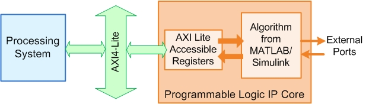

IP Core User Guide
Theory of OperationThis IP core is designed to be connected to an embedded processor with an AXI4-Lite bus. The processor acts as bus master, and the IP core acts as slave. By accessing the generated registers via the AXI4-Lite bus, the processor can control the IP core, and read and write data from and to the IP core.
For example, to reset the IP core, write 0x1 to the bit 0 of IPCore_Reset register. To enable or disable the IP core, write 0x1 or 0x0 to the IPCore_Enable register. To access the data ports of the MATLAB/Simulink algorithm, read or write to the associated data registers.

This IP core also support the External Port interface. To connect the external ports to the FPGA external IO pins, add FPGA pin assignment constraints in the Xilinx EDK environment.
Processor/FPGA Synchronization
The Free running mode means there is no explicit synchronization between embedded processor software execution (SW) and the IP core (HW). SW and HW runs independently. The data written from the processor to IP core takes effect immediately, and the data read from the IP core is the latest data available on the IP core output ports.

EDK Environment Integration
This IP Core is generated for the Xilinx EDK environment. The following steps are an example showing how to add the IP core into the EDK environment:
1. Copy the IP core folder into the "pcores" folder in your Xilinx Platform Studio (XPS) project. This step adds the IP core into the XPS project user library.
2. In the XPS project, find the IP core in the user library and add the IP core to the design.
3. Connect the S_AXI port of the IP core to the embedded processor's AXI master port.
4. Connect the clock and reset ports of the IP core to the global clock and reset signals.
5. Assign a base address for the IP core.
6. Connect external ports and add FPGA pin assignment constraints.
7. Generate FPGA bitstream and download the bitstream to target device.